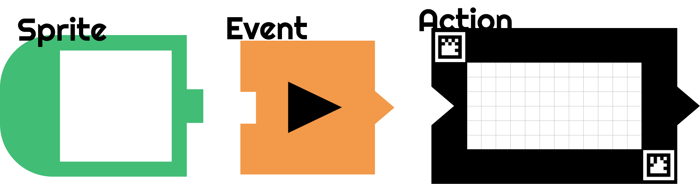
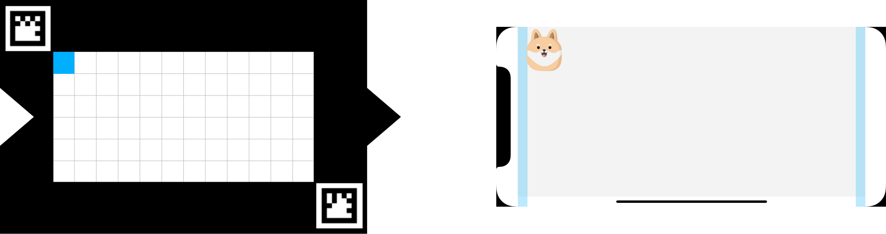
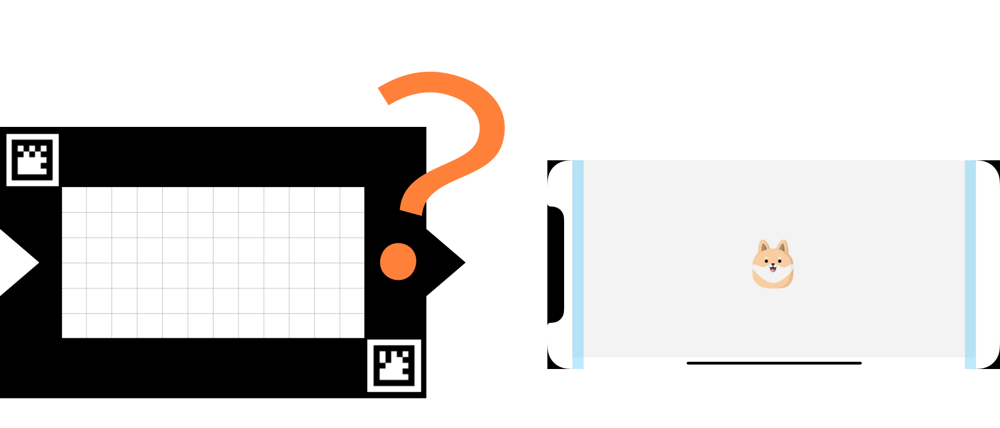
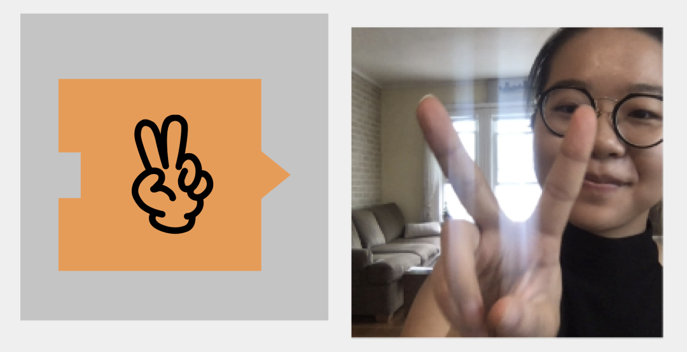

×


 Previous
Next
Previous
Next
Welcome to Draw2code, an interactive programming platform that emphasizes computational thinking and artistic designing process!
First, download the Cards to get started. You need to print and cut them out to obtain better experience

While you are cutting, let me introduce the cards. There are three types of cards -- Sprite, Event, and Action.
The Green card is called the Sprite Cards. Anything you draw on the Sprite card will be displayed on screen

Now that you have your sprite, how do you make it move? All we need is the black Action Card Think of that as a frame, and you can draw a series individual motions that animate your sprite.
With the action card, you can program how big your sprite will be, where it will appear, and the path it will move along on the screen!

The idea is “What you draw is what you see”! Think about which pixels do you need to color if you want the character to appear in the middle of the screen.
What if you want the sprite to appear twice as big?
Or if you want your character to have a twin?
So now we have our character and its motion programmed. Let’s use the Event
Card to prompt the Sprite when to move!

The cool thing about the Event Card is that it allows you to interact with the
propram. Say I selected the V-sign Event, what should I do in order to make my Sprite move?
Ok, enough about the cards! But feel free to reference to Card button for more details. For inspirations, click sparks to see what other people use Draw2code to create!
Start to play around with your cards now. When you done programming, don’t forget to test out your program by clicking scan, confirm and run!